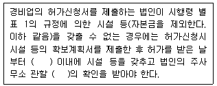
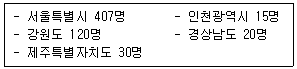
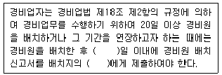
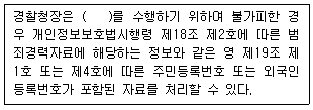

경비지도사-2차(경비업법) (2013-11-16 기출문제)
1. 경비업법령상 용어에 관한 설명으로 옳지 않은 것은?
- “경비업”이란 경비업무의 전부 또는 일부를 도급받아 행하는 영업을 말한다.
- “호송경비업무”란 운반중에 있는 현금ㆍ유가증권ㆍ귀금속ㆍ상품 그 밖의 물건에 대하여 도난ㆍ화재 등 위험발생을 방지하는 업무이다.
- “특수경비원”이란 신변보호업무를 수행하는 자를 말한다.
- “무기”라 함은 인명 또는 신체에 위해를 가할 수 있도록 제작된 권총ㆍ소총 등을 말한다.
(정답률: 84%)

2. 경비업법령상 허가신청 등에 관한 내용이다. ( )안에 들어갈 내용을 순서대로 나열한 것은?

- 15일, 경찰서장
- 15일, 지방경찰청장
- 1월, 경찰서장
- 1월, 지방경찰청장
(정답률: 78%)
3. 경비업법령상 경비업 허가에 관한 설명으로 옳지 않은 것은?
- 경비업 허가의 유효기간은 허가받은 날부터 5년으로 한다.
- 경비업 허가의 유효기간이 만료된 후 계속하여 경비업을 하고자 하는 법인은 안전행정부령이 정하는 바에 의하여 갱신허가를 받아야 한다.
- 법인이 도급받아 행하고자 하는 경비업무를 변경하는 경우에는 관할 경찰관서장에게 신고하면 된다.
- 허가관청은 영업정지처분을 하는 때에는 경비업자가 허가받은 경비업무중 영업정지사유에 해당되는 경비업무에 한하여 처분을 하여야 한다.
(정답률: 69%)
4. 경비업법령상 기계경비업무에 관한 설명으로 옳지 않은 것은?
- 기계경비업무란 경비대상시설에 설치한 기기에 의하여 감지ㆍ송신된 정보를 그 경비대상시설외의 장소에 설치한 관제시설의 기기로 수신하여 도난ㆍ화재 등 위험발생을 방지하는 업무를 말한다.
- 기계경비업자는 오경보인 경우 오경보가 발생한 경비대상시설 및 그 오경보에 대한 조치의 결과를 기재한 서류를 당해 경보를 수신한 날부터 1년간 이를 보관해야 한다.
- 기계경비업자는 경비계약을 체결하는 때에는 오경보를 막기 위하여 계약상대방에게 기기사용요령 및 기계경비운영체계 등에 관하여 설명해야 한다.
- 기계경비업자는 관제시설 등에서 경보를 수신한 때에는 경보를 수신한 때부터 늦어도 15분 이내에는 도착시킬 수 있는 대응체제를 갖추어야 한다.
(정답률: 78%)
5. 경비업법령상 특수경비원이 될 수 있는 자는?
- 만 18세로서 음주운전이 적발되어 운전면허 정지기간 중에 있는 자
- 만 20세로서 징역 1년의 실형을 선고 받고 그 집행이 종료된 날로부터 4년 된 자
- 만 22세로서 금고 1년 형의 선고유예를 받고 그 유예기간 중에 있는 자
- 만 60세로서 두 눈의 교정시력이 각각 0.6인 자
(정답률: 84%)
6. 경비업법령상 경비지도사 제1차 시험면제자에 해당되지 않는 사람은?
- 경비업법에 따른 특수경비업무 분야에서 5년을 종사하고 안전행정부령으로 정하는 교육과정을 이수한 사람
- 고등교육법에 따른 대학 이상의 학교를 졸업한 사람으로서 재학 중 경비지도사 시험과목을 3과목 이상을 이수하고 졸업한 후 경비업무에 종사한 경력이 5년인 사람
- 기계경비지도사의 자격을 취득한 후 일반경비지도사의 시험에 응시하는 사람
- 공무원임용령에 따른 행정직군 교정직렬 공무원으로 5년 동안 재직한 사람
(정답률: 81%)
7. 경비원의 수가 다음과 같을 때, 경비업법령상 경비업자가 선임ㆍ배치하여야 하는 경비지도사의 최소 인원은?

- 6명
- 7명
- 8명
- 9명
(정답률: 56%)
8. 경비업법령상 경비원의 교육에 관한 설명으로 옳은 것은?(관련 규정 개정전 문제로 여기서는 기존 정답인 2번을 누르면 정답 처리됩니다. 자세한 내용은 해설을 참고하세요.)
- 일반경비원이 되고자 하는 자는 스스로의 비용 부담으로 일반경비원 신임교육을 이수할 수 있다.
- 특수경비원 신임교육을 받은 후 2년 동안 경비업무에 종사하지 아니하다가 일반경비원으로 채용된 사람은 신임교육의 대상에서 제외될 수 있다.
- 신임교육 시간은 일반경비원이 24시간이고, 특수경비원은 88시간이다.
- 직무교육 시간은 일반경비원이 월 3시간 이상이고, 특수경비원은 월 8시간 이상이다.
(정답률: 52%)
9. 경비업법령상 특수경비원의 직무 및 무기사용에 관한 설명으로 옳지 않은 것은?
- 사람을 향하여 권총 또는 소총을 발사하고자 하는 때에는 미리 구두 또는 공포탄에 의한 사격으로 상대방에게 경고해야 함이 원칙이다.
- 테러사건에 있어서 은밀히 작전을 수행하는 경우로서 부득이한 때에는 경고 없이 사람을 향하여 권총 또는 소총을 발사할 수 있다.
- 범죄와 무관한 다중의 생명ㆍ신체에 위해를 가할 우려가 있는 때에는 무기를 사용해서는 아니 됨이 원칙이다.
- 칼을 가지고 대항하는 14세 미만의 자에 대하여 권총 또는 소총을 발사할 수 있다.
(정답률: 79%)
10. 경비업법령상 경비업자가 경비업 허가사항 등의 변경신고서 제출시 허가증 원본을 첨부하지 않아도 되는 경우는?
- 법인 명칭 변경
- 법인 대표자 변경
- 법인 임원 변경
- 법인 주사무소 변경
(정답률: 79%)
11. 경비업법령상 특수경비원의 의무를 설명하고 있는 것이 아닌 것은?
- 경비업무의 정상적인 운영을 저해하는 일체의 쟁의행위를 하여서는 아니된다.
- 도급을 의뢰받은 경비업무가 위법 또는 부당한 것일 때에는 이를 거부해야 한다.
- 직무를 수행함에 있어 시설주 등의 직무상 명령에 복종해야 한다.
- 소속상사의 허가없이 경비구역을 벗어나서는 아니된다.
(정답률: 56%)
12. 경비업법령상 경비원의 제복 및 장비 등에 관한 설명으로 옳은 것은?
- 경비원의 제복은 경찰공무원과 유사해야 하며, 일반인과 비교하여 경비원임이 식별될 수 있는 복장이어야 한다.
- 경비업자는 제복외의 복장을 착용하는 시설경비원을 동일한 배치장소에 2인 이상을 배치할 경우 각각 다른 복장을 착용하게 하여 식별이 가능하도록 해야 한다.
- 경비원의 장구 중 경적ㆍ경봉은 근무중에 한하여 이를 휴대할 수 있다.
- 기계경비업자는 출동차량의 도색 및 표지를 정한 때에는 그 도색 및 표지를 확인할 수 있는 사진을 주된 사무소를 관할하는 경찰서장에게 제출해야 한다.
(정답률: 72%)
13. 경비업법령상 관할 경찰관서장의 직무를 설명하고 있는 것이 아닌 것은?
- 경비업자가 규정을 위반하여 신고를 하지 아니하고 일반경비원을 배치한 경우에 배치폐지를 명할 수 있다.
- 경비원이 결격사유에 해당하게 된 사실을 알게 된 때에는 경비업자에게 그 사실을 통보해야 한다.
- 무기의 적정한 관리를 위하여 무기를 대여받은 시설주에 대하여 필요한 명령을 발할 수 있다.
- 국가중요시설에 대한 경비업무의 수행을 위하여 필요하다고 인정하는 때에는 시설주의 신청에 의하여 무기를 구입한다.
(정답률: 76%)
14. 경비업법령상 경비원의 배치 및 배치폐지의 신고에 관한 내용이다. ( )안에 들어갈 내용을 순서대로 나열한 것은?

- 7, 관할경찰관서장
- 7, 지방경찰청장
- 14, 관할경찰관서장
- 14, 지방경찰청장
(정답률: 68%)
15. 경비업법령상 과태료의 부과기준금액이 가장 많은 것은? (단, 과태료의 경감이나 가중은 고려하지 않는다.)
- 경비대행업자 지정신고를 허위로 신고한 경우
- 경비원 명부를 비치하지 아니한 경우
- 경비지도사를 선임하지 아니한 경우
- 법인의 주사무소를 이전하고 12개월 초과의 기간이 경과하고도 신고하지 아니한 경우
(정답률: 62%)
16. 경비업법령에 관한 내용으로 옳은 것은?(관련 규정 개정전 문제로 여기서는 기존 정답인 4번을 누르면 정답 처리됩니다. 자세한 내용은 해설을 참고하세요.)
- 금고 이상의 형의 집행유예선고를 받고 그 유예기간이 만료된 날부터 5년이 지나지 아니한 사람은 일반경비원이 될 수 없다.
- 두 눈의 맨눈 시력이 0.2 미만인 사람은 일반경비원이 될 수 없다.
- 기계경비지도사는 기계경비업과 시설경비업에 한하여 선임ㆍ배치한다.
- 경찰청장은 경비지도사의 수급상황을 조사하여 경비지도사를 새로이 선발할 필요가 있다고 인정되는 때에는 경비지도사 시험의 실시계획을 수립해야 한다.
(정답률: 76%)
17. 경비업법령상 무기관리 수칙에 관한 설명으로 옳은 것은?
- 무기를 대여 받은 국가중요시설의 시설주는 무기의 관리실태를 매월 파악하여 다음 달 5일까지 관할경찰관서장에게 통보해야 한다.
- 시설주로부터 무기를 지급받은 특수경비원은 근무시간 이후에는 시설주에게 반납하거나 교대근무자에게 무기를 인계해야 한다.
- 무기를 대여 받은 시설주가 특수경비원에게 무기를 출납하고자 하는 때에는 탄약의 출납은 소총에 있어서는 1정당 20발 이내로 해야 한다.
- 경비원으로부터 무기 수송의 통보를 받은 관할경찰서장은 2인 이상의 무장경찰관을 무기를 수송하는 자동차 등에 함께 타도록 해야 한다.
(정답률: 78%)
18. 경비업법령상 경비지도사자격의 취소 등에 관한 설명으로 옳지 않은 것은?
- 경비지도사가 허위로 경비지도사자격증을 교부받은 때에는 그 자격이 취소된다.
- 경비지도사가 경비지도사자격증을 다른 사람에게 빌려준 때에는 그 자격이 취소된다.
- 경비지도사가 경비업법 제24조의 명령을 위반하여 자격정지처분을 받은 후 2년 내에 또다시 명령위반으로 적발된 경우 12월의 자격정지처분을 받을 수 있다.
- 경비지도사가 경비현장에 배치된 경비원에 대한 순회점검 및 감독 의무 등 직무를 성실하게 수행하지 아니하여 1차 적발된 경우 3월의 자격정지처분을 받을 수 있다.
(정답률: 74%)
19. 경비업법령상 경비업자의 행위에 대한 행정처분기준으로 옳지 않은 것은?(단, 행정처분기준의 경감이나 가중은 고려하지 않는다.)(관련 규정 개정전 문제로 여기서는 기존 정답인 1번을 누르면 정답 처리됩니다. 자세한 내용은 해설을 참고하세요.)
- 지방경찰청장의 허가 없이 경비업무를 변경한 경우 2차 위반에 대하여는 영업정지 3월이다.
- 경비원이 업무수행 중 고의로 발생한 손해를 배상하지 아니한 경우 3차 위반에 대하여는 영업정지 6월이다.
- 경비원의 복장ㆍ장비 및 출동차량에 관한 규정을 위반한 경우 3차 위반에 대하여는 영업정지 1월이다.
- 경비원으로 하여금 규정에 의한 교육을 받게 하지 아니한 경우 3차 위반에 대하여는 영업정지 1월이다.
(정답률: 80%)
20. 경비업법령상 청문절차를 반드시 거쳐야만 하는 경우가 아닌 것은?
- 현장배치 경비원에 대한 감독을 수행하지 않아 받은 경비지도사의 자격정지처분
- 경비원의 업무수행중 제3자에게 입힌 손해에 대한 경비업자의 배상
- 허가 없이 경비업무를 변경하여 받은 경비업의 영업정지처분
- 결격사유에 해당되는 경비원 채용이 적발되어 받은 경비업 허가의 취소처분
(정답률: 89%)
21. 경비업법령상 경비협회의 공제사업에 관한 설명으로 옳지 않은 것은?
- 공제사업의 회계는 다른 사업의 회계와 구분하여 경리해야 한다.
- 경비업자의 후생ㆍ복지를 위한 목적으로 공제사업을 운영할 수 있다.
- 공제사업을 하고자 하는 때에는 공제규정을 제정해야 한다.
- 공제규정에는 공제사업의 범위와 공제계약의 내용 등 공제사업의 운영에 관하여 필요한 사항을 정해야 한다.
(정답률: 82%)
22. 경비업법령상 민감정보 및 고유식별정보의 처리에 관한 내용이다. ( )안에 들어갈 사무에 해당하지 않는 것은?

- 경비업의 허가 및 갱신허가에 관한 사무
- 특수경비원의 직무 및 무기사용에 관한 사무
- 보안지도ㆍ점검 및 보안측정에 관한 사무
- 경비협회의 설립에 관한 사무
(정답률: 65%)
23. 경비업법령상 경비업자 또는 경비원의 행위와 벌칙에 관한 설명으로 옳은 것은?
- 파업을 한 특수경비원은 1년 이하의 징역 또는 1천만원 이하의 벌금에 처한다.
- 직무상 알게 된 비밀을 누설한 경비업자의 임ㆍ직원은 2년 이하의 징역 또는 2천만원 이하의 벌금에 처한다.
- 고의로 국가중요시설의 정상적인 운영을 해치는 장해를 일으킨 특수경비원은 3년 이하의 징역 또는 3천만원 이하의 벌금에 처한다.
- 정당한 사유없이 무기를 소지하고 배치된 경비구역을 벗어난 특수경비원은 3년 이하의 징역 또는 3천만원 이하의 벌금에 처한다.
(정답률: 73%)
24. 경비업법령상 권한의 위임 및 위탁 등에 관한 설명으로 옳지 않은 것은?
- 경비업법에 의한 경찰청장의 권한은 대통령령이 정하는 바에 따라 그 일부를 지방경찰청장에게 위임할 수 있다.
- 경찰청장은 경비지도사의 자격의 취소 및 정지에 관한 권한을 지방경찰청장에게 위임한다.
- 경찰청장은 경비지도사 자격의 취소 및 정지에 관한 청문의 권한을 지방경찰청장에게 위임한다.
- 경찰청장은 경비지도사 시험 관리 및 교육에 관한 업무를 경비업에 관한 인력과 전문성을 갖추고 경찰관서장이 지정하여 고시한 기관 또는 단체에 위임할 수 있다.
(정답률: 84%)
25. 경비업법령에 관한 내용으로 옳지 않은 것은?(관련 규정 개정전 문제로 여기서는 기존 정답인 3번을 누르면 정답 처리됩니다. 자세한 내용은 해설을 참고하세요.)
- 방송 및 무선통신기기 제조업은 특수경비업자가 할 수 있는 경비관련업이다.
- 관할경찰관서장은 시설주의 신청에 의하여 특수경비원이 배치된 국가중요시설 등에 경비전화를 가설할 수 있다.
- 경비업법령에 규정한 사항 외에 과태료의 부과ㆍ징수절차에 관하여 필요한 사항은 경찰청의 행정규칙으로 정한다.
- 경비업자는 경비원이 업무수행중 고의 또는 과실로 제3자에게 손해를 입힌 경우에는 이를 배상하여야 한다.
(정답률: 69%)
26. 경비업법령상 허가증 등의 수수료에 관한 설명으로 옳은 것은?(관련 규정 개정전 문제로 여기서는 기존 정답인 2번을 누르면 정답 처리됩니다. 자세한 내용은 해설을 참고하세요.)
- 시험에 응시하고자 하는 자가 응시수수료를 과오납한 경우 납부한 응시수수료 전액을 반환받는다.
- 시험에 응시하고자 하는 자가 시험시행일 7일 전에 접수를 취소한 경우 납부한 응시수수료 전액을 반환받는다.
- 관할경찰관서장은 정보통신망을 이용하여 전자화폐ㆍ전자결제 등의 방법으로 수수료를 납부하게 할 수 있다.
- 시험에 응시하고자 하는 자의 귀책사유로 시험에 응시하지 못한 경우 납부한 응시수수료의 전액을 반환받는다.
(정답률: 77%)
27. 경비업법령상 특수경비원의 형의 가중처벌 대상에 해당되는 형법상 범죄는?
- 특수강도죄
- 특수주거침입죄
- 살인죄
- 중체포죄
(정답률: 56%)
28. 청원경찰법령상 청원경찰의 복무에 관하여 국가공무원법의 규정이 준용되지 않는 것은?(관련 규정 개정전 문제로 여기서는 기존 정답인 1번을 누르면 정답 처리됩니다. 자세한 내용은 해설을 참고하세요.)
- 청원경찰의 정치 운동의 금지
- 청원경찰의 비밀 엄수의 의무
- 청원경찰의 집단 행위의 금지
- 청원경찰의 직장 이탈의 금지
(정답률: 90%)
29. 청원경찰법령상 청원경찰의 직무 및 배치에 관한 설명으로 옳지 않은 것은?
- 청원경찰을 배치받으려는 자는 관할 지방경찰청장에게 청원경찰 배치를 신청해야 한다.
- 지방경찰청장은 청원경찰 배치 신청을 받으면 지체 없이 그 배치 여부를 결정하여 신청인에게 알려야 한다.
- 청원경찰이 직무를 수행할 때에 경찰관직무집행법령에 따라 하여야 할 모든 보고는 관할 지방경찰청장에게 서면으로 해야 한다.
- 지방경찰청장은 청원경찰 배치가 필요하다고 인정하는 기관의 장에게 청원경찰을 배치할 것을 요청할 수 있다.
(정답률: 88%)
30. 청원경찰법령상 청원경찰의 배치 및 임용방법 등에 관한 설명으로 옳지 않은 것은?
- 청원경찰의 배치를 받으려는 자는 청원경찰 배치신청서에 경비구역 평면도 1부와 배치계획서 1부를 첨부해야 한다.
- 청원주는 청원경찰 배치 결정의 통지를 받은 날부터 30일 이내에 청원경찰 임용승인을 지방경찰청장에게 신청해야 한다.
- 청원주가 청원경찰을 임용하였을 때에는 임용한 날부터 10일 이내에 그 임용사항을 관할 경찰서장을 거쳐 지방경찰청장에게 보고해야 한다.
- 청원주는 청원경찰이 퇴직하였을 때에는 그 퇴직한 날부터 14일 이내에 지방경찰청장에게 보고해야 한다.
(정답률: 82%)
31. 청원경찰법령상 청원경찰의 교육 및 배치 등에 관한 설명으로 옳은 것은?
- 청원경찰의 교육기간은 2주이며, 수업시간은 76시간이다.
- 경찰공무원으로 퇴직한 사람이 퇴직한 날부터 5년 이내에 청원경찰로 임용되었을 때에는 청원경찰 교육을 면제해야 한다.
- 청원주의 사정상 부득이하다고 인정될 때에는 청원경찰을 우선 배치하고 임용 후 1년 이내에 청원경찰 교육을 받게 할 수 있다.
- 청원경찰을 이동배치하여 이동배치지가 다른 관할구역에 속할 때에는 청원주는 전입지를 관할하는 경찰서장에게 그 사실을 통보해야 한다.
(정답률: 77%)
32. 청원경찰법령상 청원경찰의 임용 등에 관한 설명으로 옳지 않은 것은?
- 청원경찰은 청원주가 임용하되, 임용을 할 때에는 미리 지방경찰청장의 승인을 받아야 한다.
- 피한정후견인은 청원경찰로 임용될 수 있다.
- 청원경찰로 임용되기 위해서는 신체가 건강하고 팔다리가 완전하며, 시력(교정시력을 포함한다)은 양쪽 눈이 각각 0.8 이상이어야 한다.
- 군복무가 면제된 만 25세인 남자는 청원경찰로 임용될 수 있다.
(정답률: 90%)
33. 청원경찰법령상 청원경찰경비의 지급방법 또는 납부방법을 안전행정부령으로 정하지 않는 것은?(관련 규정 개정전 문제로 여기서는 기존 정답인 3번을 누르면 정답 처리됩니다. 자세한 내용은 해설을 참고하세요.)
- 청원경찰의 피복비
- 청원경찰의 교육비
- 청원경찰의 퇴직금
- 청원경찰에게 지급할 봉급과 각종 수당
(정답률: 89%)
34. 청원경찰법령상 청원경찰의 봉급과 각종 수당은 누가 부담하는가?
- 청원주
- 지방경찰청장
- 관할 경찰서장
- 지방자치단체장
(정답률: 93%)
35. 청원경찰법령상 청원경찰의 보수 등에 관한 설명으로 옳지 않은 것은?
- 국가기관에 근무하는 청원경찰의 각종 수당은 공무원수당 등에 관한 규정에 따른 수당 중 가계보전수당, 실비변상 등으로 하며, 그 세부 항목은 경찰청장이 정하여 고시한다.
- 국가기관에 근무하는 청원경찰의 보수산정을 위한 재직기간은 청원경찰로서 근무한 기간으로 한다.
- 국가기관에 근무하는 청원경찰 보수의 호봉 간 승급기간은 경찰공무원의 승급기간에 관한 규정을 준용한다.
- 국가기관 또는 지방자치단체에 근무하는 청원경찰 외의 청원경찰 보수의 호봉 간 승급기간 및 승급액은 순경의 승급에 관한 규정을 사업장의 취업규칙보다 우선 준용한다.
(정답률: 81%)
36. 청원경찰법령상 국가기관이나 지방자치단체에 근무하는 청원경찰 본인의 의사에도 불구하고 휴직을 명하여야 하는 경우가 아닌 것은?
- 국외유학을 하게 된 때
- 신체ㆍ정신상의 장애로 장기 요양이 필요할 때
- 병역법에 따른 병역 복무를 마치기 위하여 징집된 때
- 천재지변 등의 사유로 생사가 불명확하게 된 때
(정답률: 86%)
37. 청원경찰법령상 청원경찰의 징계에 관한 설명으로 옳은 것은?
- 징계처분권자는 청원주이다.
- 견책은 보수의 3분의 1을 줄인다.
- 직위해제는 청원경찰에 대한 징계의 종류에 해당한다.
- 관할 경찰서장은 징계규정의 보완이 필요하다고 인정할 때에는 청원주에게 그 보완을 요구할 수 있다.
(정답률: 83%)
38. 청원경찰법령상 청원경찰의 복제와 무기휴대에 관한 설명으로 옳지 않은 것은?
- 지방경찰청장은 청원경찰이 직무를 수행하기 위하여 필요하다고 인정하면 청원주의 신청을 받아 관할 경찰서장으로 하여금 청원경찰에게 무기를 대여하여 지니게 할 수 있다.
- 청원주가 청원경찰이 휴대할 무기를 대여받으려는 경우에는 관할 경찰서장을 거쳐 지방경찰청장에게 무기대여를 신청해야 한다.
- 청원주는 대여받은 무기와 탄약에 분실ㆍ도난ㆍ피탈(被奪) 또는 훼손 등의 사고가 발생하였을 때에는 지체 없이 그 사유를 관할 군부대장에게 통보해야 한다.
- 청원주로부터 무기와 탄약을 지급받은 청원경찰은 무기를 인계인수할 때에는 반드시 “앞에 총” 자세에서 “검사 총”을 해야 한다.
(정답률: 90%)
39. 청원경찰법령상 과태료의 부과기준금액이 가장 적은 것은? (단, 과태료의 경감이나 가중은 고려하지 않는다.)
- 지방경찰청장의 승인을 받지 않고 임용 결격사유에 해당하는 청원경찰을 임용한 경우
- 지방경찰청장의 배치 결정을 받지 않고 국가 중요 시설 외의 시설에 청원경찰을 배치한 경우
- 정당한 사유 없이 경찰청장이 고시한 최저부담기준액 이상의 보수를 지급하지 않은 경우
- 총기ㆍ실탄 및 분사기에 관한 지방경찰청장의 감독상 필요한 명령을 정당한 사유 없이 이행하지 않은 경우
(정답률: 63%)
40. 청원경찰법령상 관할 경찰서장과 지방경찰청장이 공통으로 갖춰 두어야 할 문서나 장부에 해당하는 것은?
- 청원경찰 명부
- 전출입 관계철
- 교육훈련 실시부
- 청원경찰 임용승인 관계철
(정답률: 72%)